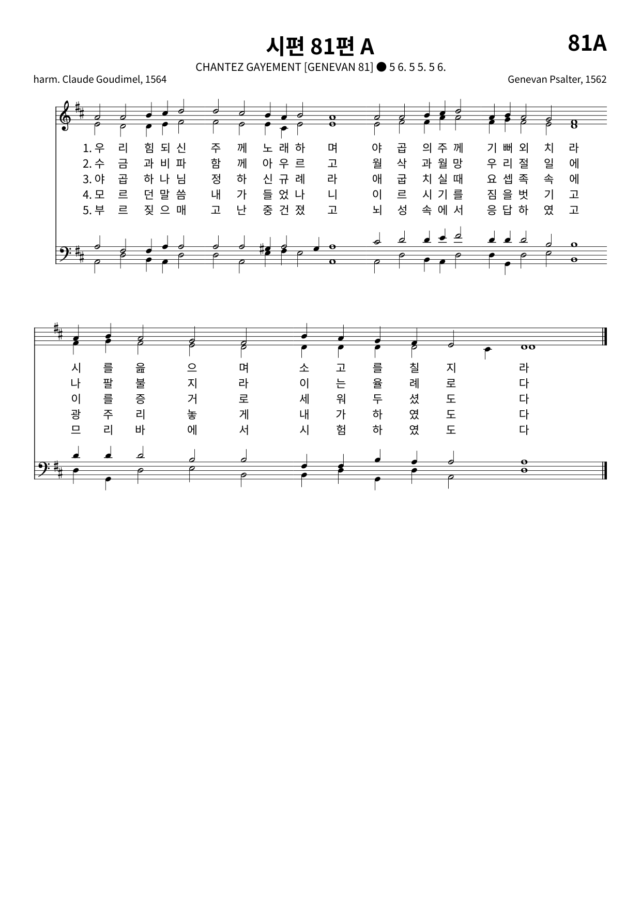

Psalm 81A
CHANTEZ GAYEMENT [GENEVAN 81] · 5 6. 5 5. 5 6.
English title: Sing a Psalm of Joy
Tune: Genevan Psalter, 1562 · Harmony: Claude Goudimel, 1564 · Lyrics: Korean adaptation of Psalm 81 from the Korean Revised Version (AI draft adaptation · not yet theologically reviewed) · 5 stanzas
Psalm 81 is divided into 2 tunes: A B · This tune contains stanzas 1–5 of the Psalm 81 lyrics.
Score PDF MusicXML (for printing) MusicXML (for accompaniment, with prelude and repeats) Read Psalm 81 (Korean Revised Version)
Score
← Psalm 80 ListAccompaniment (in preparation)Psalm 81B →
Lyrics (Korean)
Stanza 1 (Ps. 1-2a)
우리 힘 되신
주께 노래하며
야곱의 주께
기뻐 외치라
시를 읊으며
소고를 칠지라
우리 힘 되신
주께 노래하며
야곱의 주께
기뻐 외치라
시를 읊으며
소고를 칠지라
Stanza 2 (Ps. 2b-3·4a)
수금과 비파
함께 아우르고
월삭과 월망
우리 절일에
나팔 불지라
이는 율례로다
수금과 비파
함께 아우르고
월삭과 월망
우리 절일에
나팔 불지라
이는 율례로다
Stanza 3 (Ps. 4b-5a)
야곱 하나님
정하신 규례라
애굽 치실 때
요셉 족속에
이를 증거로
세워 두셨도다
야곱 하나님
정하신 규례라
애굽 치실 때
요셉 족속에
이를 증거로
세워 두셨도다
Stanza 4 (Ps. 5b-6)
모르던 말씀
내가 들었나니
이르시기를
짐을 벗기고
광주리 놓게
내가 하였도다
모르던 말씀
내가 들었나니
이르시기를
짐을 벗기고
광주리 놓게
내가 하였도다
Stanza 5 (Ps. 7)
부르짖으매
고난 중 건졌고
뇌성 속에서
응답하였고
므리바에서
시험하였도다
부르짖으매
고난 중 건졌고
뇌성 속에서
응답하였고
므리바에서
시험하였도다